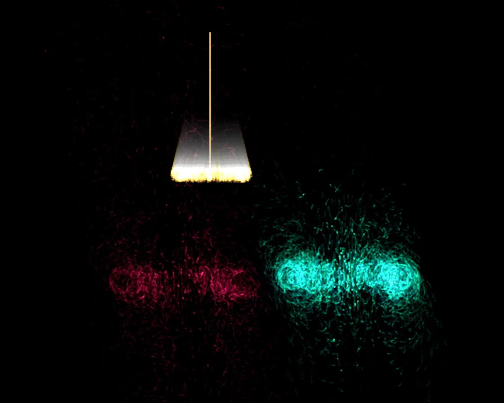

Ink drop in water
Ink drop in water is a Canvas effect: particles orbiting a sinking, widening vortex ring. One plain JavaScript file with no dependencies; add it with npx motion-library add ink-drop.

Open it live, tune it and copy the code
What is Ink drop in water?
A drop of ink rolls into a sinking vortex ring that breaks into curling plumes.
How does Ink drop in water work?
Thousands of particles orbit the ring core as it sinks, widens and slows; a faint fill each frame lets old ink linger and clear.
How do I add Ink drop in water to my website?
- In your project folder, run
npx motion-library add ink-drop. It writesanimations/ink-drop.js. Needs Node 18 or newer. - Import it and call it with a container element that has a size:
import fx from './animations/ink-drop.js'; const stop = fx(document.querySelector('#hero')); - Call
stop()to clean up, for example when a component unmounts.
Every setting below is also a flag, so you can install it already tuned: npx motion-library add ink-drop --particles 6000.
What settings can I tweak?
| Setting | Flag | Default | Range | Step |
|---|---|---|---|---|
| Particles | --particles | 2600 | 800 to 6000 | 100 |
| Drop every (s) | --interval | 3.2 | 1.5 to 6 | 0.1 |
Specifications
- Renderer
- Canvas 2D
- Category
- Fluid
- Dependencies
- None
- File size
- 3.7 KB, unminified
- Interactive
- No: it plays on its own
- Reduced motion
- Plays the same for everyone
- Licence
- MIT-0: use it anywhere, no credit needed
Source code
// Ink drop in water: a falling drop rolls up into a vortex ring. Thousands of ink particles circle the ring's
// core while the ring sinks, widens and slows; it then breaks into curling plumes that hang in the water.
const PARAMS = { particles: 2600, interval: 3.2 };
export default function (stage) {
const canvas = document.createElement('canvas');
canvas.style.cssText = 'position:absolute;inset:0;width:100%;height:100%;display:block;background:#000';
stage.append(canvas);
const ctx = canvas.getContext('2d');
let W = 0, H = 0;
const resize = () => { const d = Math.min(devicePixelRatio, 2); W = stage.clientWidth; H = stage.clientHeight; canvas.width = W * d; canvas.height = H * d; ctx.setTransform(d, 0, 0, d, 0, 0); ctx.fillStyle = '#000'; ctx.fillRect(0, 0, W, H); };
const ro = new ResizeObserver(resize); ro.observe(stage); resize();
const inks = ['70, 150, 255', '255, 60, 130', '40, 230, 180', '255, 190, 90']; // luminous inks, added light-on-dark
let drops = [], k = 0, next = 0, raf;
function spawn(now) {
const S = Math.min(W, H), n = Math.round(PARAMS.particles), x = W * (0.3 + Math.random() * 0.4);
const parts = Array.from({ length: n }, () => ({ a: Math.random() * Math.PI * 2, b: Math.random() * Math.PI * 2, rr: Math.sqrt(Math.random()) * 0.35, drift: (Math.random() - 0.5) * 0.6, wisp: Math.random() }));
drops.push({ x, y: H * 0.08, t0: now, S, parts, col: inks[k++ % inks.length] });
}
function frame(now) {
if (now > next) { spawn(now); next = now + PARAMS.interval * 1000; }
// the dark water slowly clears: scale every pixel by .92 and shave one more level, so faint ink drains to true black (a plain
// translucent fill stalls a few levels above the ground and leaves grey ghosts)
ctx.save(); ctx.setTransform(1, 0, 0, 1, 0, 0); ctx.globalCompositeOperation = 'copy'; ctx.filter = 'brightness(0.913) contrast(1.012)'; ctx.drawImage(canvas, 0, 0); ctx.restore();
ctx.globalCompositeOperation = 'lighter';
for (const d of drops) {
const age = (now - d.t0) / 1000;
// ring: sinks fast then slows, widens as it goes
const depth = H * 0.08 + H * 0.62 * (1 - Math.exp(-age * 0.9));
const R = d.S * (0.02 + 0.13 * (1 - Math.exp(-age * 0.7)));
const core = R * 0.45, spin = age * 4.5;
for (const p of d.parts) {
// particle on a torus: angle a around the ring, angle b around the core
const breakup = Math.max(0, age - 1.6) * p.wisp; // late: plumes curl away
const a = p.a + Math.sin(p.a * 6 + age) * 0.05 * breakup;
const b = p.b + spin * (1 - p.rr);
const rc = core * (p.rr + 0.15) * (1 + breakup * 0.5);
const ringX = Math.cos(a) * (R + Math.cos(b) * rc), ringZ = Math.sin(a) * (R + Math.cos(b) * rc);
const y = depth + Math.sin(b) * rc + breakup * breakup * p.drift * d.S * 0.12 + breakup * d.S * 0.03 * Math.sin(a * 3);
const x = d.x + ringX + ringZ * 0.15 + breakup * p.drift * d.S * 0.08;
const alpha = Math.max(0, 0.16 - age * 0.012) * (0.5 + 0.5 * (ringZ / R + 1) / 2);
if (alpha <= 0.002) continue;
ctx.fillStyle = `rgba(${d.col}, ${alpha})`; ctx.fillRect(x, y, 1.8, 1.8);
}
// the short tail that connects ring to surface early on
if (age < 1.2) { ctx.strokeStyle = `rgba(${d.col}, ${0.25 * (1 - age / 1.2)})`; ctx.lineWidth = 2; ctx.beginPath(); ctx.moveTo(d.x, H * 0.08); ctx.lineTo(d.x, depth); ctx.stroke(); }
}
ctx.globalCompositeOperation = 'source-over';
drops = drops.filter(d => now - d.t0 < 14000);
raf = requestAnimationFrame(frame);
}
raf = requestAnimationFrame(frame);
return () => { cancelAnimationFrame(raf); ro.disconnect(); canvas.remove(); };
}